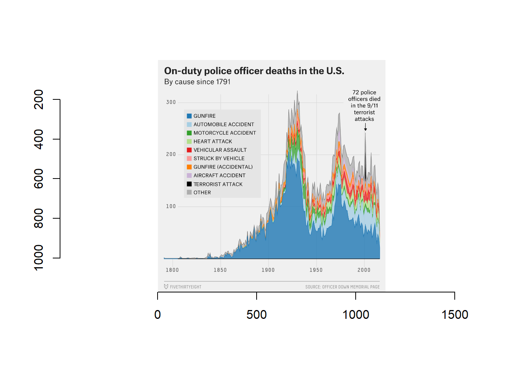
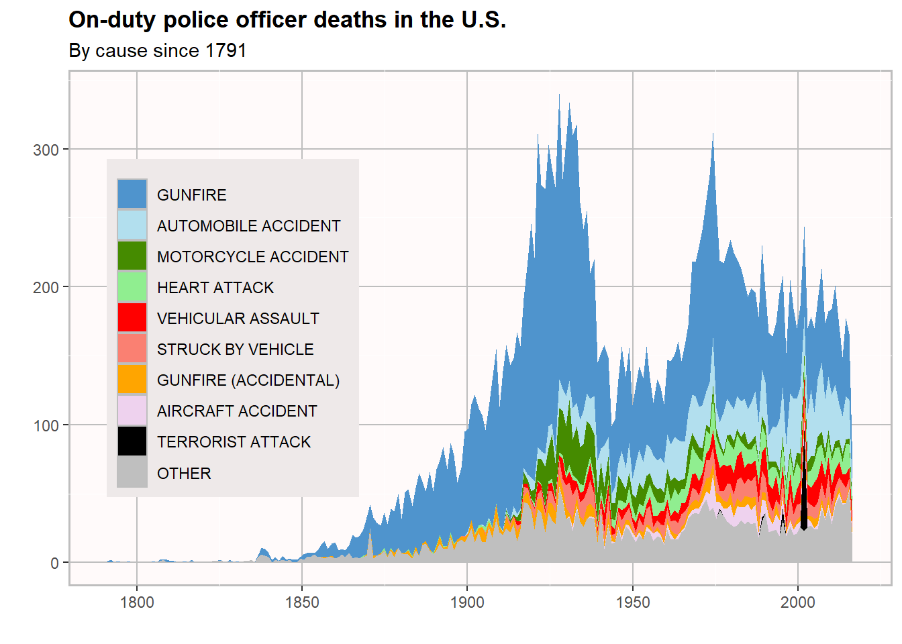

Visualization
This will contain the future visualization exercise.
#load libraries
library(tidyverse)## -- Attaching packages --------------------------------------- tidyverse 1.3.0 --## v ggplot2 3.3.3 v purrr 0.3.4
## v tibble 3.0.6 v dplyr 1.0.4
## v tidyr 1.1.2 v stringr 1.4.0
## v readr 1.4.0 v forcats 0.5.1## -- Conflicts ------------------------------------------ tidyverse_conflicts() --
## x dplyr::filter() masks stats::filter()
## x dplyr::lag() masks stats::lag()library(ggplot2)
library(here)## Warning: package 'here' was built under R version 4.0.5## here() starts at C:/Users/algla/OneDrive/Desktop/MADA/AMANDAGLATTER-MADA-portfoliolibrary(png)
library(imager)## Warning: package 'imager' was built under R version 4.0.5## Loading required package: magrittr##
## Attaching package: 'magrittr'## The following object is masked from 'package:purrr':
##
## set_names## The following object is masked from 'package:tidyr':
##
## extract##
## Attaching package: 'imager'## The following object is masked from 'package:magrittr':
##
## add## The following object is masked from 'package:stringr':
##
## boundary## The following object is masked from 'package:tidyr':
##
## fill## The following objects are masked from 'package:stats':
##
## convolve, spectrum## The following object is masked from 'package:graphics':
##
## frame## The following object is masked from 'package:base':
##
## save.imagelibrary(dplyr)
#Load data
data_location <- here::here("data", "clean_data_538.csv")
#Load data
data_538 <- read.csv(data_location)Next, we will use ggplot to recreate this graph:
image_location <- here::here("images", "original_538.png")
#og_image <- readPNG(image_location, native = TRUE, info = TRUE)
og <- load.image(image_location)
plot(og)
Let’s start recreating this plot using ggplot2.
data_538 %>% ggplot(aes(x = year, fill = cause_short )) +
geom_area(stat="bin")## `stat_bin()` using `bins = 30`. Pick better value with `binwidth`. There are too many categories, so we have to refine the list down to aircraft accident, automobile accident, gunfire, gunfire (accidental), heart attack, motorcycle accident, struck by vehicle, terrorist attack, vehicular assault, and put the rest into the “other” category.
There are too many categories, so we have to refine the list down to aircraft accident, automobile accident, gunfire, gunfire (accidental), heart attack, motorcycle accident, struck by vehicle, terrorist attack, vehicular assault, and put the rest into the “other” category.
It looks like we have a lot of wrangling and cleaning up to do; the basic ggplot won’t cut it.
First, I am putting any cause that is not one of the listed causes into an “other” category. Next, I will reclassify the date column from column to dates. Then, I will change all the cause_short names so they are all capitalized like in the original image. I reorder the causes so they appear in the correct order on the legend. Then comes plotting!
#Creating "other" category from extra death causes
data_538_2 <- data_538 %>% mutate(cause_short = case_when(
.$cause_short == "Accidental" ~ "Other",
.$cause_short == "Animal related" ~ "Other",
.$cause_short == "Asphyxiation" ~ "Other",
.$cause_short == "Assault" ~ "Other",
.$cause_short == "Bicycle accident" ~ "Other",
.$cause_short == "Boating accident" ~ "Other",
.$cause_short == "Bomb" ~ "Other",
.$cause_short == "Drowned" ~ "Other",
.$cause_short == "Duty Related illness" ~ "Other",
.$cause_short == "Electrocuted" ~ "Other",
.$cause_short == "Explosion" ~ "Other",
.$cause_short == "Exposure" ~ "Other",
.$cause_short == "Exposure to toxins" ~ "Other",
.$cause_short == "Fall" ~ "Other",
.$cause_short == "Fire" ~ "Other",
.$cause_short == "Heat exhaustion" ~ "Other",
.$cause_short == "Poisoned" ~ "Other",
.$cause_short == "Stabbed" ~ "Other",
.$cause_short == "Struck by streetcar" ~ "Other",
.$cause_short == "Struck by train" ~ "Other",
.$cause_short == "Structure collapse" ~ "Other",
.$cause_short == "Train accident" ~ "Other",
.$cause_short == "Training accident" ~ "Other",
.$cause_short == "Unidentified" ~ "Other",
.$cause_short == "Vehicle pursuit" ~ "Other",
.$cause_short == "Weather/Natural disaster" ~ "Other",
.$cause_short == "9/11 related illness" ~ "Other",
.$cause_short == "Duty related illness" ~ "Other",
TRUE ~ cause_short
))
#Converting the date column from character to date class. I had tried to just use year as the x axis, but it was not specific enough and the spikes did not look as precise as did the original plot.
data_538_2[['date']] <- as.POSIXct(data_538_2[['date']], format = "%Y-%m-%d")
#Changing cause_short categories to uppercase and changing the order to match the original image.
data_538_2$cause_short <- data_538_2$cause_short %>% toupper()
#Reordering the cause_short categories so they appear in the correct order in the legend on the plot.
data_538_2$cause_short <- factor(data_538_2$cause_short, levels = c("GUNFIRE","AUTOMOBILE ACCIDENT",
"MOTORCYCLE ACCIDENT", "HEART ATTACK",
"VEHICULAR ASSAULT",
"STRUCK BY VEHICLE",
"GUNFIRE (ACCIDENTAL)",
"AIRCRAFT ACCIDENT",
"TERRORIST ATTACK",
"OTHER"))Now that we’ve wrangled, let’s create the actual plot.
#Creating the plot
DATAPLOT <- data_538_2 %>% ggplot(aes(x = date, fill = cause_short )) +
geom_area(stat="bin", bins=214) +
xlab("") + ylab("") +
scale_color_discrete(name = "") +
scale_color_discrete(breaks=c("GUNFIRE","AUTOMOBILE ACCIDENT",
"MOTORCYCLE ACCIDENT", "HEART ATTACK",
"VEHICULAR ASSAULT",
"STRUCK BY A VEHICLE",
"GUNFIRE (ACCIDENTAL)",
"AIRCRAFT ACCIDENT",
"TERRORIST ATTACK",
"OTHER")) +
ggtitle("On-duty police officer deaths in the U.S.", subtitle = "By cause since 1791") + theme(
plot.title = element_text(face = "bold"),
legend.position = c(.2, .5)) +
theme(legend.key = element_rect(fill = "grey")) +
guides(color = guide_legend(override.aes = list(size = 4))) +
scale_fill_manual(values=c("steelblue3", "lightblue2","chartreuse4", "lightgreen","red", "salmon", "orange","thistle2", "black","grey75")) +
theme( legend.title = element_blank(), panel.background = element_rect(fill = "snow1", color = "grey", size = 1)) +
theme(panel.grid.major = element_line(color = "grey", size = .5),
legend.background = element_rect(fill="snow2",
size=0.5, linetype="solid"))## Scale for 'colour' is already present. Adding another scale for 'colour',
## which will replace the existing scale.print(DATAPLOT)
There are still many problems with the plot I created. There are smaller issues like font, dimensions, border, and the inclusion of the arrow pointing to the spike in terrorist-caused deaths on 9/11. The largest issues is that the the actual data appears differently. For reference, here is the original graph again:
image_location <- here::here("images", "original_538.png")
#og_image <- readPNG(image_location, native = TRUE, info = TRUE)
og <- load.image(image_location)
plot(og)) The lines of the graph appear very different compared to the original graph. In the original, the “other” consistently holds the highest number of deaths, but on my graph, it is the lowest. The general shape of the lines look the same, but when you take a closer look, the quantities for each death cause are very different at each given time. If anyone might know why it appears like this, please reply in the thread or DM me! One possibility is that some of the categories (all listed below) were placed into one of the main categories (as written on the original legend) instead of into the “Other” category. However, that does not explain why the “other” category is so low on my recreated plot.
The lines of the graph appear very different compared to the original graph. In the original, the “other” consistently holds the highest number of deaths, but on my graph, it is the lowest. The general shape of the lines look the same, but when you take a closer look, the quantities for each death cause are very different at each given time. If anyone might know why it appears like this, please reply in the thread or DM me! One possibility is that some of the categories (all listed below) were placed into one of the main categories (as written on the original legend) instead of into the “Other” category. However, that does not explain why the “other” category is so low on my recreated plot.
All original categories for the causes of death in the “cause_short” column :
Accidental
Aircraft accident
Animal related
Asphyxiation
Assualt
Automobile accident
Bicycle accident
Boating accident
Bomb
Drowned
Duty Related illness
Electrocuted
Explosion
Exposure
Exposure to Toxins
Fall
Fire
Gunfire
Gunfire (Accidental)
Heart attack
Heat exhaustion
Motorcycle accident
Poisoned
Stabbed
Struck by streetcar
Struck by train
Struck by vehicle
Structure collapse
Terrorist attack
Train accident
Training accident
Unidentified
Vehicle pursuit
Vehicular assault
Weather/Natural disaster